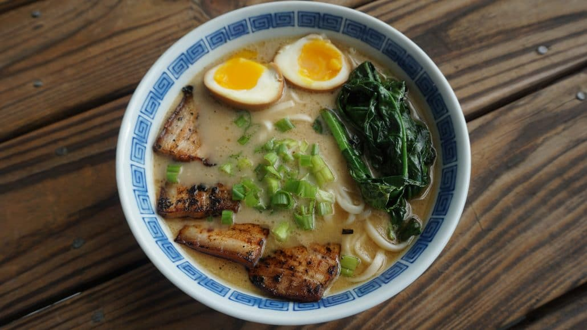

Back to recipes
Ie-kei Ramen

Description
Ie-kei is a ramen specialty from Yokohama. It consists of thick, straight noodles served in a soy flavored pork broth similar to tonkotsu (sometimes referred to as tonkotsu-shoyu). The standard toppings are roasted pork (chāshū), boiled spinach, sheets of nori, often with shredded Welsh onion (negi) and a soft- or hard-boiled egg. Wikipedia
Diners are encouraged to choose the amount of fat, the amount of tare, the richness of the broth and how they want their noodles cooked. There are also a wide array of free toppings available on the counter at iekei shops for customers to further adjust their bowls with, such as minced garlic and ginger, spices, oils, and vinegars.
A simple bowl of Japanese rice is a perfect accompaniment for a hungry diner, with many adding it directly to the leftover soup as a means of soaking up those final sips of soup, or eating with your soggy nori!James Chant
Recipe inspired from Dinner by Dennis
Ingredients
We will need the following:
Tonkotsu Broth
- water
- 3 lbs pork bones
- 2 lbs pork trotters (split in half)
- 1 leek (optional)
Chashu Pork
- 1 lb pork belly
- ⅓ cup soy sauce
- 1¼ cup sake
- 1 tbsp mirin
- 2 tbsp brown sugar (or palm sugar or honey)
Toppings
- ½ cup spinach (fried or boiled)
- 1 green onion (sliced)
- 2 eggs (softboiled)
- 2 packages ramen noodles
Seasoned Oil
- 1½ tbsp chicken fat
- 1 green onion (sliced)
- 3 garlic cloves (minced)
Instructions
Tonkotsu Broth
-
- Put the bones and trotters in a large pot and cover with water. Put a lid on and put in the fridge overnight.
- Next day, dump out the water and cover the bones with fresh water. Put pot on the stove on high heat. Gray scum will occasionally rise to the surface, scoop it out. Stir the bones every so often so they don't stick to the bottom. Keep adding water as it evaporates to keep the bones completely covered.
- Keep boiling for a minimum of 8 hours. An hour before taking the broth off the heat, stop adding additional water. Also, add optional ingredients like leeks or garlic now, if desired.
Chashu Pork
-
- Sear the pork belly on all sides in a skillet. Remove, and put in a saucepan. Mix the other ingredients and add to the saucepan. Cook on medium for 15 minutes, then flip the pork onto the other side. Cook for another 8 minutes. Remove from saucepan. Save liquid.
- Put eggs in a container with most of the liquid from braising the pork. Marinate in the fridge for at least 2 hours.
Seasoned Oil
-
- Prepare noodles according to directions on package.
- Slice pork thinly and sear on both sides, about 1 minute each.
- Heat chicken fat in skillet on medium heat. Add green onion and garlic, fry for a few minutes. Remove veggies from oil, pour into your ramen bowls.
- Add 2 tbsp of the shoyu sauce from braising the pork to each bowl. Add 2 cups of tonkotsu broth to each bowl.
- Divide noodles between each bowl. Add slices of chashu pork, sliced green onion, spinach, and egg. Enjoy!
Additional info
- Prep time: 1 d
- Cook time: 8 hrs
- Servings: 2
Back to Top